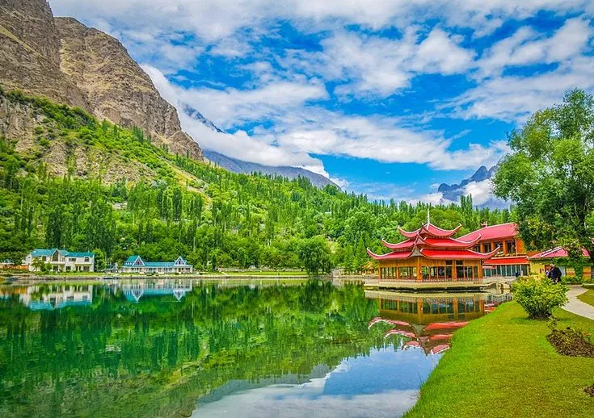

Gateway to the world's mightiest peaks — Shangrila Resort, Deosai Plains, Kachura Lake, the cold desert, and ancient Kharpocho Fort await you in Skardu.

Skardu is the largest city in Gilgit-Baltistan, referred to as the "Gateway to the Mighty Karakoram Mountains." Located at 2,228 m elevation, it is surrounded by waterfalls, tall trees, green meadows, and snow-capped mountains. The city is the base for expeditions to K2, Broad Peak, and the Gasherbrums.
Skardu is also home to one of Pakistan's most unique landscapes — the Skardu Cold Desert — a sandy desert surrounded by towering mountains, unlike anywhere else on earth.
By air: Direct PIA flights from Islamabad (scenic mountain flight). By road: Via Karakoram Highway to Gilgit (10–12 hrs), then Skardu Road (6–8 hrs). The Babusar Pass route offers a more scenic alternative (seasonal).
We offer complete Skardu tour packages including Deosai, Shangrila, Upper Kachura, and more. Honeymoon and family packages available.